A deep, factual tour of UK natural-gas trading: the NBP balance, the weather and storage drivers, the 2021–22 shock, the 2006 calendar-spread blow-up, and the strategies that real funds have used — then how AI changes all of it, now and next.
The NBP (National Balancing Point) is the UK's virtual gas hub: the single price at which UK gas trades, quoted in pence per therm (p/th). One therm ≈ 29.3 kWh. It is the physical and financial reference for the whole UK gas market.
The NBP price is a balance: supply against weather-driven demand, buffered by storage.
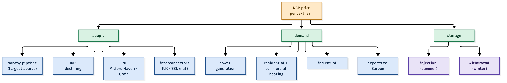
Figure 1.1 — Norway, UKCS, LNG and interconnectors supply; power, heating, industry and exports demand.
| Fact | Number |
|---|---|
| UK gas demand | ~70–80 bcm/year |
| price unit | pence per therm (p/th) |
| hub | NBP (virtual) |
| traded | day-ahead, M+1, season, winter, forwards |
The market clears every gas day, and the price is set by the marginal unit of supply or demand — exactly like the power merit order, but for molecules.
UK gas supply has four legs, and they matter because they are the shocks:
| Source | Share (approx.) | What shocks it |
|---|---|---|
| Norway pipeline | ~45% | outages, maintenance (Kollsnes, Troll) |
| UKCS (North Sea) | ~25%, declining | field decline, unplanned outages |
| LNG (Milford Haven, Isle of Grain) | ~20%, swing | Asian premium, cargo diversion |
| interconnectors (IUK to Belgium, BBL to NL) | net exporter/importer | European demand, price spreads |
Norway is the single largest source — a Norwegian outage is the classic bullish event. LNG is the swing: when Asia pays up, cargoes divert and the UK tightens. The interconnectors link NBP to TTF (Dutch) and make the UK part of one European gas system.
| Use | Driver | Volatility |
|---|---|---|
| power generation | gas-fired power, wind/solar output | high, weather |
| residential + commercial heating | HDD (temperature) | high, winter |
| industrial | economic activity | low |
| exports (IUK/BBL) | European prices | high, event |
Heating and power burn are the weather-driven core. A cold winter day can nearly double demand from a mild one. That is why UK gas is a weather market first and foremost.
The UK has very little gas storage — roughly 9 days of demand, versus ~80 days for Germany. This is the single most important structural fact about NBP:
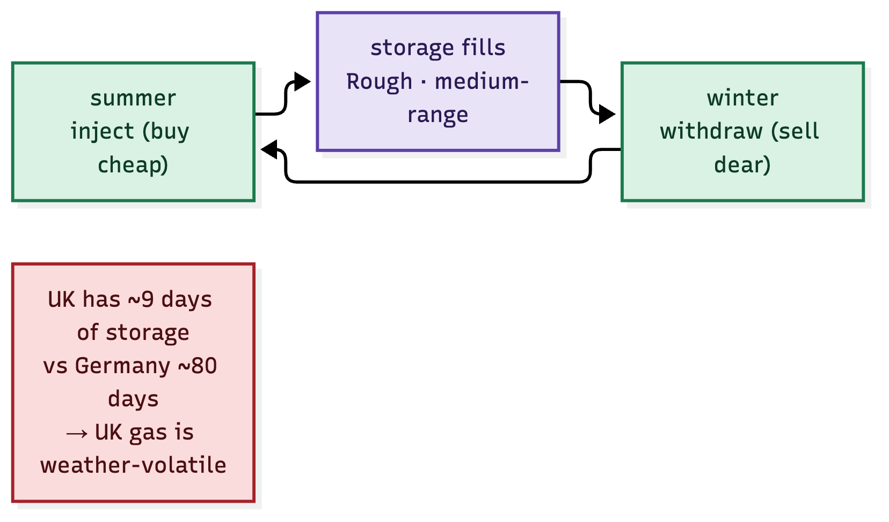
Figure 4.1 — inject in summer, withdraw in winter; the UK is structurally short storage.
| Fact | Number |
|---|---|
| UK storage | ~9 days of demand |
| Germany | ~80 days |
| Rough (largest, closed 2017, partly reopened) | ~3.3 bcm |
| consequence | NBP is more volatile + weather-sensitive than TTF |
Because the UK cannot store its way through a cold winter, the market is the storage — prices must move sharply to ration demand and attract LNG. That is the structural source of the UK's winter price spikes.
Gas has a built-in seasonal rhythm: inject in summer (cheap), withdraw in winter (dear). The summer-winter spread is the price of storage plus a risk premium.
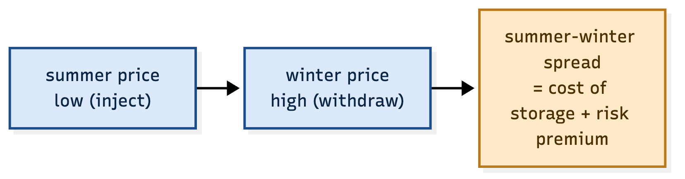
Figure 5.1 — the winter premium is the cost of carry plus the risk of a cold, tight winter.
The spread is the most-traded structure in gas. It should be bounded by storage economics (inject now, withdraw later, earn the spread) — but it blew out dramatically in 2021–22 when storage was low and the risk premium exploded.
Weather is the single biggest short-term driver. The measure is HDD (heating degree days): each degree below a baseline (15.5°C) is one unit of heating demand.
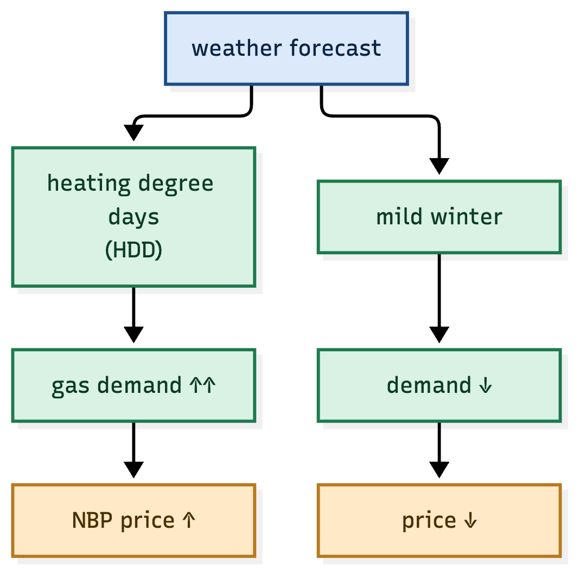
Figure 6.1 — cold raises demand and price; mild does the reverse.
| Event | Impact |
|---|---|
| cold snap ("Beast from the East" 2018) | demand spike, price spike |
| mild winter | demand soft, price soft |
| forecast revision (colder) | price jumps on the revision |
The edge in UK gas is often the weather forecast revision, not the weather itself — the trader who sizes the change in the forecast faster wins.
The defining gas event of the era:
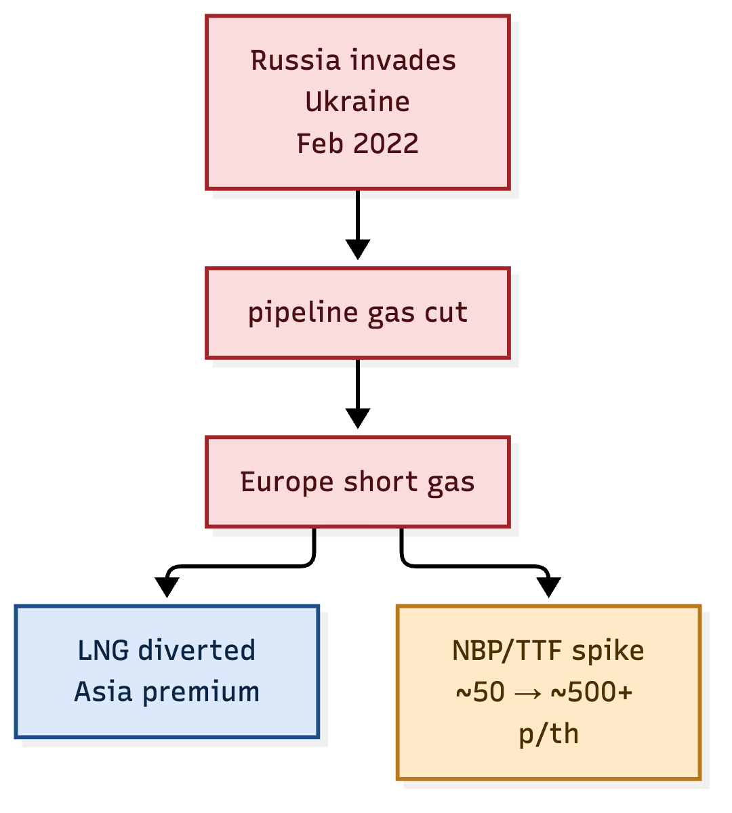
Figure 7.1 — Russia's invasion cut pipeline gas, Europe scrambled for LNG, prices exploded.
| Date | Event | NBP/TTF |
|---|---|---|
| early 2021 | tight storage, cold winter | ~40–50 p/th |
| late 2021 | Russia curtails flows | ~200+ p/th |
| Feb 2022 | invasion of Ukraine | spike |
| Aug 2022 | peak panic, LNG diversion | ~500–600+ p/th |
The lesson: gas is a geopolitical commodity. A supply shock to a low-storage system with little spare capacity is not a 20% move — it is a 10× move. The funds that were long the winter / long storage ahead of 2021–22 made the trade of the decade.
One large US hedge fund's lead energy trader bet huge on natural-gas calendar spreads (long winter / short summer, and the March-April and Nov-Jan spreads). In September 2006 the spreads moved against the position and the fund lost ~$6 billion in a week — the largest hedge-fund collapse to that date. The CFTC later charged the trader with attempted manipulation of gas futures.
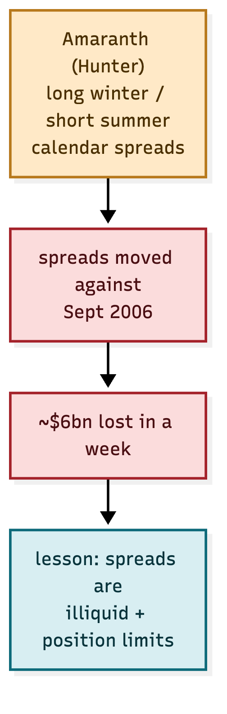
Figure 8.1 — one over-sized spread position, one adverse move, $6bn gone.
The lesson is not "don't trade spreads" — it is "size the spread, know its liquidity, and never let one position be the fund." The calendar spread is a good trade; the mistake was the size and the concentration.
The funds that won the crisis were long winter gas, long the storage premium, and long the tail — via the curve and options. They read the fundamentals (low storage + tight LNG + Russia risk) and positioned before the spike. That is fundamental, option-shaped trading: buy the tail, not the point.
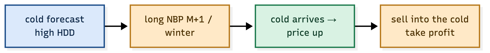
Figure 9.1 — buy the cold forecast, sell into the cold.
The classic: on a colder forecast revision, long M+1 / winter; when the cold arrives and the price spikes, sell into it. A legendary gas trader built his fortune on weather-driven gas trading — reading the forecast faster and better than the market.
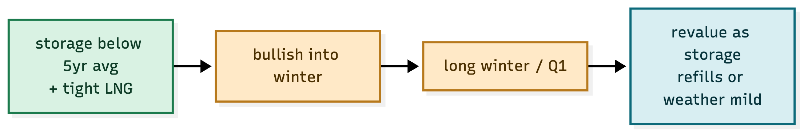
Figure 9.2 — low storage + tight LNG = bullish into winter.
When storage is below the 5-year average going into winter, the winter premium is underpriced. Long winter / Q1, and revalue as storage refills or weather turns mild.
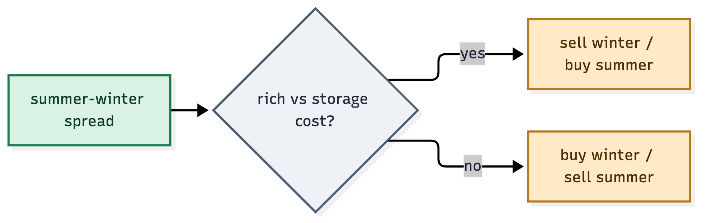
Figure 9.3 — trade the spread against its storage-cost anchor.
The spread is the same instrument that fund used — but the discipline is the anchor: the spread should not exceed the cost of storage plus a reasonable risk premium. When it does, it is rich; sell it. When it is below, buy it.
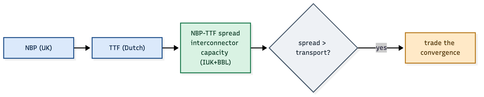
Figure 9.4 — the NBP-TTF spread is bounded by interconnector capacity.
NBP and TTF are linked by the IUK and BBL interconnectors. When the spread exceeds transport cost, the flow arbitrages it away. Trade the convergence.
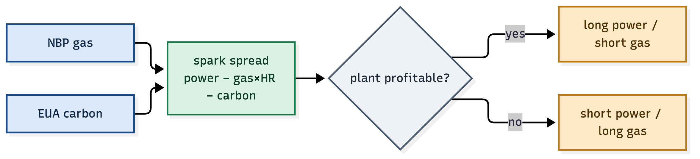
Figure 9.5 — power minus gas and carbon; trade the plant margin.
The spark spread ties gas to power. When a gas plant is profitable (spread rich), power is bid up relative to gas; when it is losing (spread negative), gas is bid up relative to power. Trade the mean reversion.
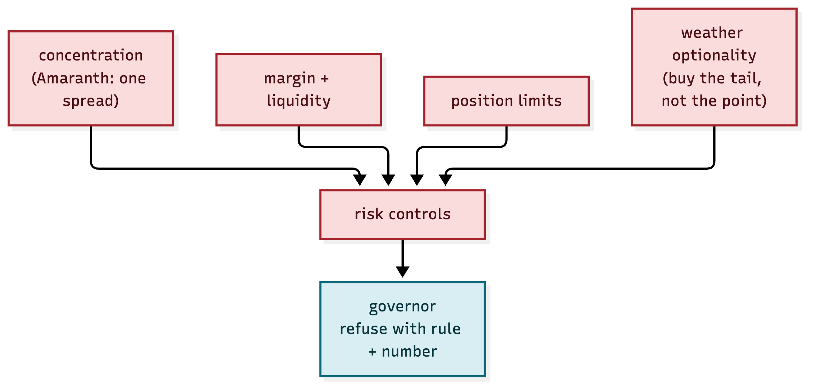
Figure 10.1 — concentration, margin, liquidity, limits and the tail, all before the governor.
| Lesson | Source | Control |
|---|---|---|
| concentration kills | the 2006 fund | one spread ≠ one fund; limits |
| spreads are illiquid | the 2006 fund | size to the book, not the view |
| the tail is the risk | 2021–22 | options + stress, buy the tail |
| margin calls are real | 2021–22 | free-margin gate before every order |
| weather is optionality | 2018 | trade the forecast, hedge the miss |
The envelope's governor is built exactly for this: refuse with a rule and a number, before the trade, while it can still be refused.
What it does. AI turns the same data a trader reads — price, weather, storage, flows, news — into forecasts and signals that are faster, more systematic and more probabilistic than a human alone.
Why it matters. Gas is a data-rich, weather-driven, event-driven market. The edge is in fusing many weak signals (a cold forecast, a low storage number, a pipeline outage headline) into one strong, probability-weighted view — which is exactly what machine learning is good at.
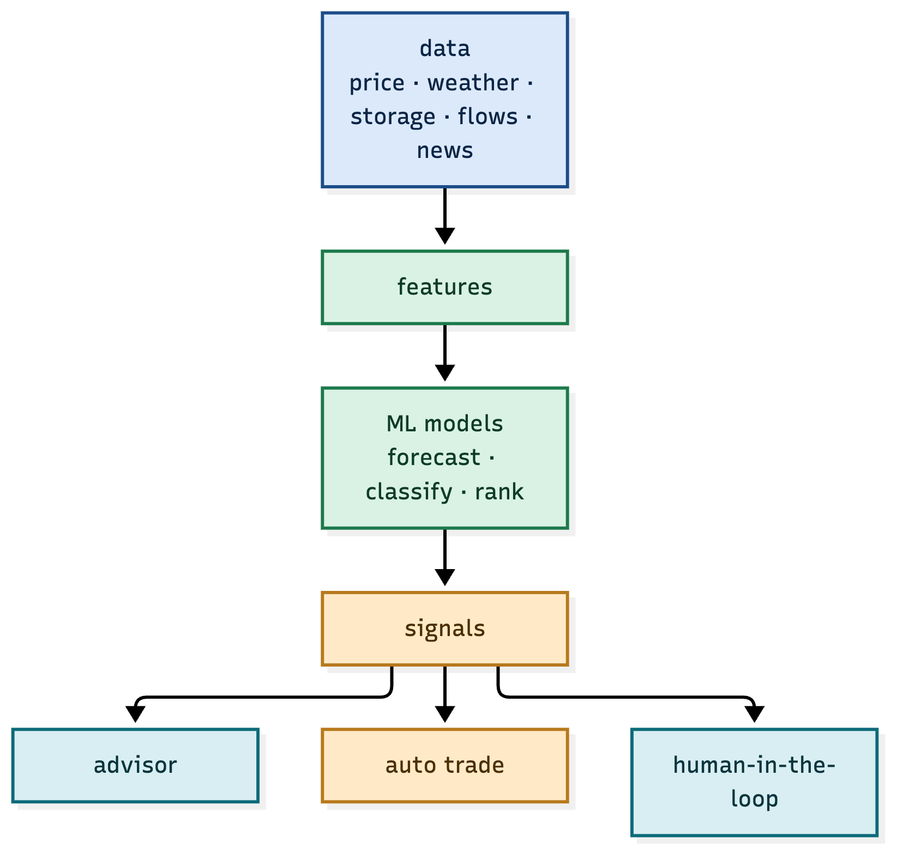
Figure 11.1 — data → features → ML models → signals → advisor / auto / human.
| Layer | What AI does | Human's role |
|---|---|---|
| data | ingest + clean | verify sources |
| models | forecast, classify, rank | choose features, judge sanity |
| signals | produce a probability | override, size, approve |
| decision | recommend | own the risk |
The human does not disappear — the human moves up the stack, from computing to supervising.
What it does. Predicts the price (or the direction) of a contract — M+1, the winter, the summer-winter spread — from a feature vector.
Why it matters. The gas price is a function of many interacting inputs (HDD, storage, LNG, curve shape). ML finds the mapping where a hand-written formula would miss it.
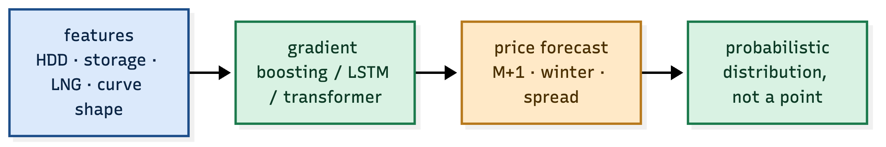
Figure 12.1 — features in, a price forecast out, with uncertainty.
| Model | Strength | Use |
|---|---|---|
| gradient boosting (XGBoost/LightGBM) | tabular, interpretable | the workhorse — daily balance |
| LSTM / temporal | sequences, memory | demand over hours |
| transformer | long-range, attention | news + price, multi-horizon |
The honest forecast is not a point — it is a distribution. A forecast of "M+1 at 120 p/th ± 15" is tradeable; a forecast of "120" is a guess.
What it does. Forecasts quantiles (q05, q50, q95), not a single number.
Why it matters. The asymmetry is the trade. If the q95 is +40% but the q05 is −5%, the risk-reward is asymmetric and you size differently than a symmetric point forecast would say.
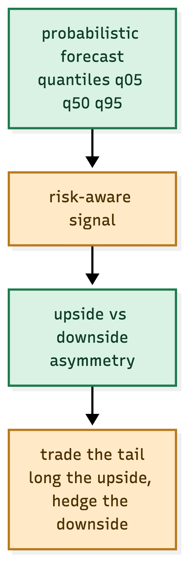
Figure 13.1 — quantiles give the upside/downside asymmetry, and you trade the tail.
| Forecast | What it tells you | Action |
|---|---|---|
| q50 (median) | the central view | the base position |
| q05 | the downside | the stop / the hedge |
| q95 | the upside | the tail to buy |
This is where ML beats a rule: a rule says "cold → bullish"; a probabilistic model says "cold → bullish with 70% confidence and a fat right tail".
What it does. Maps a weather forecast (temperature, wind) to gas and power demand.
Why it matters. Weather is the single biggest short-term driver of gas demand — heating in winter, power burn. The model that maps degrees to therms is the foundation of every forecast.
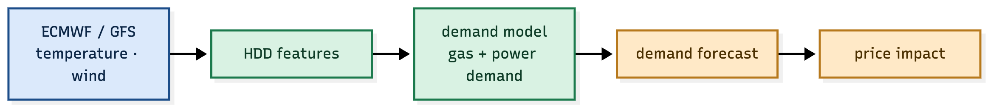
Figure 14.1 — ECMWF/GFS temperature → HDD → demand → price impact.
| Input | Feature | Model |
|---|---|---|
| temperature | HDD (heating degree days) | demand regression / ML |
| wind | wind power output | power burn → gas demand |
| solar | solar output | same |
Heating degree days are the workhorse: one degree below a baseline is one unit of heating demand, aggregated over population and buildings. The ML version learns the non-linearity (extreme cold is worse than linear).
What it does. Reads the wires and social in real time and turns them into events — a pipeline outage, an LNG cargo diversion, a sanction, a strike.
Why it matters. The biggest gas moves are event-driven (a pipeline cut, an invasion). The trader who learns of the event seconds faster — and sizes it correctly — has the edge.
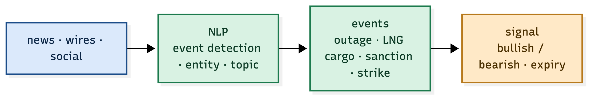
Figure 15.1 — NLP detects the event, the event becomes a signal with an expiry.
| Event | Typical market impact |
|---|---|
| pipeline outage | bullish (supply cut) |
| LNG cargo cancelled | bullish (supply short) |
| mild weather revision | bearish (demand soft) |
| storage beat | bearish (looser) |
NLP turns unstructured text into a typed event with an expiry — the signal is "bearish M+1, 2-day horizon", not just "negative news".
What it does. Scores the tone of news and the positioning of the market (CFTC-style commitments, option skew, flows).
Why it matters. When everyone is already long, the marginal buyer is gone — sentiment is the contrarian and the momentum signal at once.
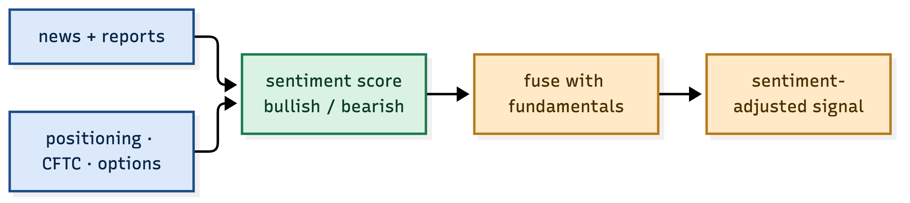
Figure 16.1 — news tone + positioning fuse into a sentiment-adjusted signal.
| Sentiment | Reading | Action |
|---|---|---|
| crowded long | exhaustion risk | fade the longs |
| crowded short | squeeze risk | fade the shorts |
| neutral + fundamentals | clean signal | follow the fundamentals |
Sentiment is a weight, not a direction — it tells you how much to trust the fundamental signal, and when a move is over-extended.
What it does. A large-language-model agent that reads the lake, the news and the models, and answers questions with evidence.
Why it matters. The platform already records everything as envelopes. An LLM agent can read that record and explain a move — and, crucially, cite the envelopes as evidence.
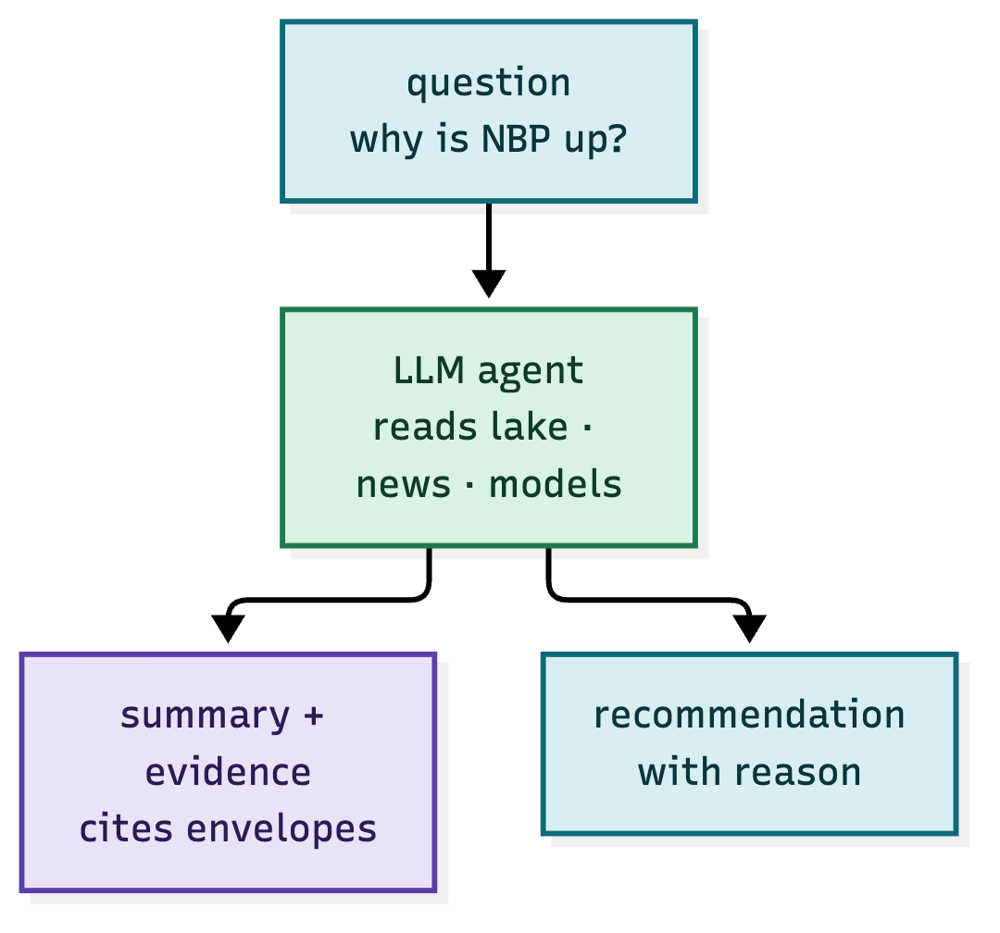
Figure 17.1 — a question in, a cited answer out.
"Why is NBP up today?" → "Cold revision (+4 HDD) and a Norwegian outage (Kollsnes, −30 mcm/d), against storage at 60% (below 5yr avg). See envelopes #…, #…, #…."
The LLM does not replace the models — it narrates them, and it makes the advisory self-explanatory for compliance and for the human.
What it does. Learns how to act (order size, timing, venue) to maximise a reward (slippage, fill, PnL).
Why it matters. Forecasting is "what"; execution is "how". A good forecast ruined by bad execution is a loss. RL optimises the how.
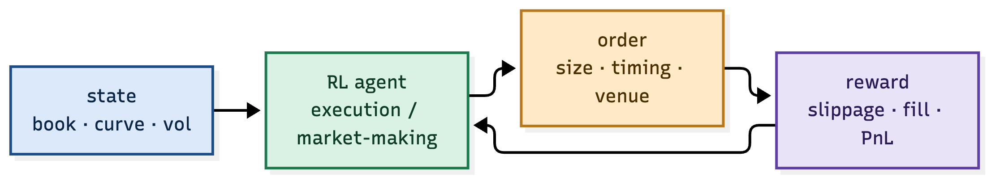
Figure 18.1 — state → action → reward, learned end to end.
| Use | State | Action | Reward |
|---|---|---|---|
| execution | book, curve, vol | order size + timing | −slippage, fill |
| market-making | inventory, spread | quote | spread PnL − inventory risk |
RL is the future of the tactics, while the strategy (what to be long or short) remains the fundamental and ML models.
What it does. Generates synthetic scenarios — cold snaps, pipeline cuts, LNG booms — for stress and training.
Why it matters. The tail is where the money and the risk are. A generative model can sample the tails that history has not yet shown, so you train and stress for the 1-in-50 winter, not just the 1-in-5.
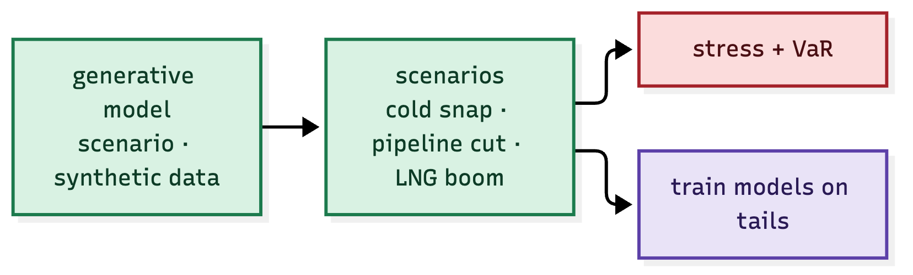
Figure 19.1 — scenarios feed stress tests and tail-aware training.
| Use | What it gives |
|---|---|
| stress / VaR | the tail losses |
| training | models that have seen the extreme |
This is the answer to "what happens if we get another 2022": you generate it, and you size for it.
What it does. Runs many specialised agents — weather, fundamental, news, sentiment — each publishing on the bus, and a meta-agent that fuses them into a tier.
Why it matters. This is the AI version of the architecture we already built: each agent is a calculation agent, the bus is the nervous system, the meta-agent is the book's intel window. AI slots into the envelope, it does not replace it.
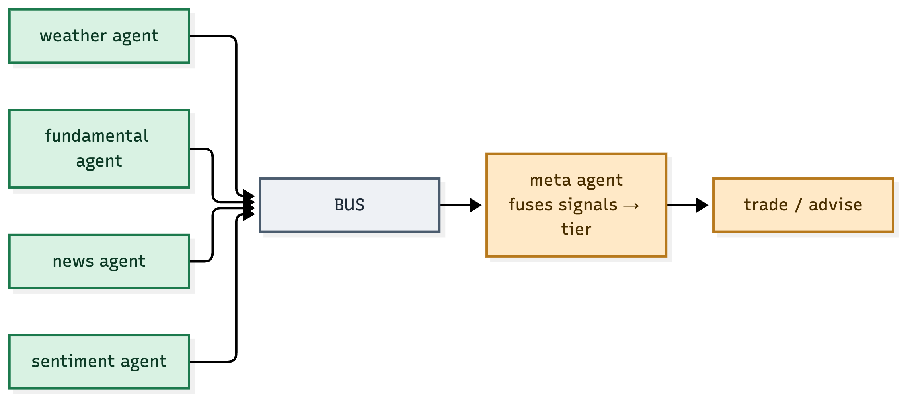
Figure 20.1 — weather, fundamental, news, sentiment agents → bus → meta-agent → trade.
The envelope architecture was built for this: models publish numbers, the book accumulates them and confirms a pattern. AI models are just more, and better, numbers.
What it does. Keeps a human in the decision — the AI proposes, the human sizes, approves, vetoes — and records who did what.
Why it matters. Regulation (MiFID II, suitability) and risk demand accountability. The AI can be wrong in ways a human catches (a headline the model mis-read, a tail it has not seen). The human is the guardian, and the envelope records the override.
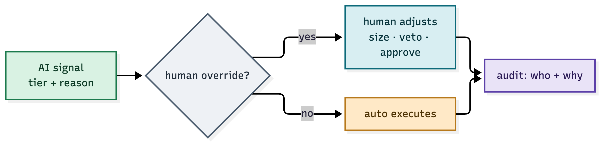
Figure 21.1 — AI signal → human override or auto → audit of who + why.
| Mode | Human's role |
|---|---|
| advisory | human reads the AI view |
| systematic | human approves the rules |
| auto | human sets the bounds, AI executes within them |
What it does. The pipeline from raw data to a deployed agent.
Why it matters. AI is only as good as the data. The stack — clean, align, feature, train, validate, deploy — is where most AI projects fail, and where the envelope helps: every stage is a stamped, versioned artefact.
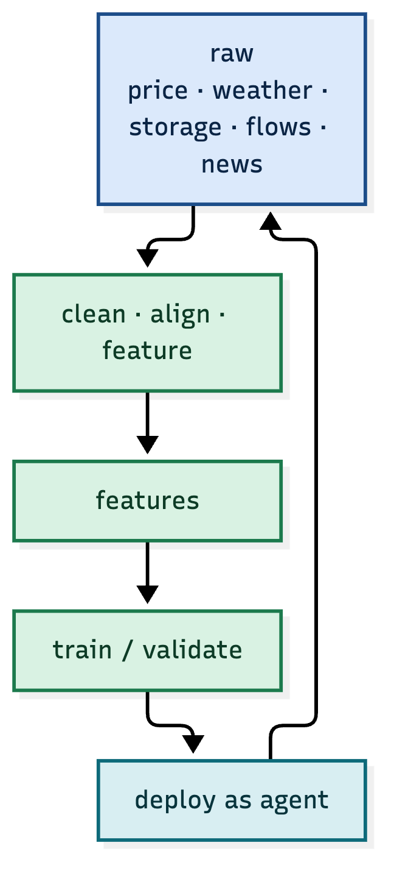
Figure 22.1 — raw → clean → features → train → deploy, looping.
| Stage | Envelope role |
|---|---|
| raw | recorded as market/fundamental envelopes |
| features | a derived dataset, versioned |
| train | a model artefact, versioned |
| deploy | an agent that publishes signals |
Versioned data + versioned models = a forecast you can reproduce, which is the same traceability the trading platform already guarantees.
What it does. Combines the fundamental, ML, weather and sentiment models into one signal with a confidence.
Why it matters. No single model is right all the time. The ensemble is more robust than the best single model — it is the pattern of agreement that matters, exactly like the book's intel window.
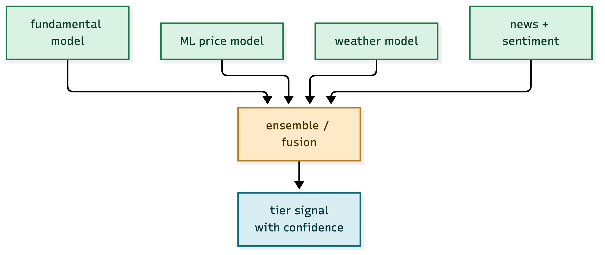
Figure 23.1 — four models fuse into one tier signal with confidence.
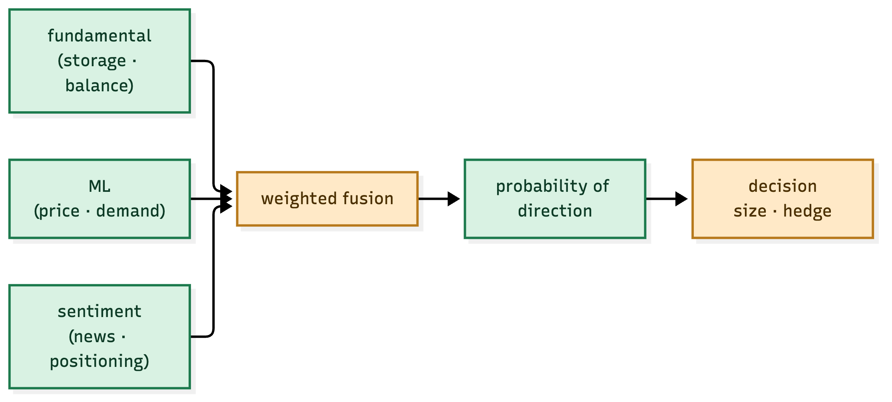
Figure 23.2 — fundamental + ML + sentiment → probability → decision.
| Fusion | How |
|---|---|
| voting | count agreeing models |
| weighted | weight by track record |
| stacked | a meta-model learns the weights |
The tier signal is the confidence — and confidence is what separates a trade from a gamble.
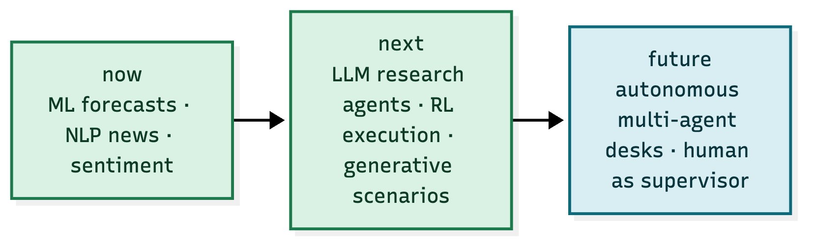
Figure 24.1 — ML forecasts today, LLM agents + RL next, autonomous desks later.
| Horizon | Capability |
|---|---|
| now | ML price/demand forecasts, NLP news, sentiment |
| next | LLM research agents, RL execution, generative scenarios |
| future | autonomous multi-agent desks, human as supervisor |
The direction is clear: the human moves from computing to supervising, and the platform — with its envelope, its bus, its audit trail — is already built to host that future.
What it does. Governs the AI like it governs any model: versioned, validated, bounded, and accountable.
Why it matters. An AI that trades gas can fail silently (a drift in the weather model) or loudly (a mis-read headline). The same controls that apply to any model apply to AI — plus new ones.
| Risk | Control |
|---|---|
| model drift | monitor forecast error, retrain on schedule |
| hallucination (LLM) | cite envelopes, never invent a fact |
| overfitting | validate out-of-sample, walk-forward |
| tail blindness | generative stress, size for the tail |
| opacity | a reason for every signal, a human override |
The envelope is the answer to all of them: every signal carries a reason, a timestamp and a provenance, and every decision is auditable. AI does not change that — it makes it more necessary.
What it is. Energy markets — gas and power especially — have been repeatedly abused, because the underlying is physical, the benchmark is an assessment, and one big player can move a thin market. Understanding the abuses is part of trading it honestly.
Why it matters. The same mechanics that make gas tradable (a physical balance, a price-assessment window, an illiquid curve) are the mechanics that get manipulated. A trader must both avoid the abuses and recognise them in the tape.
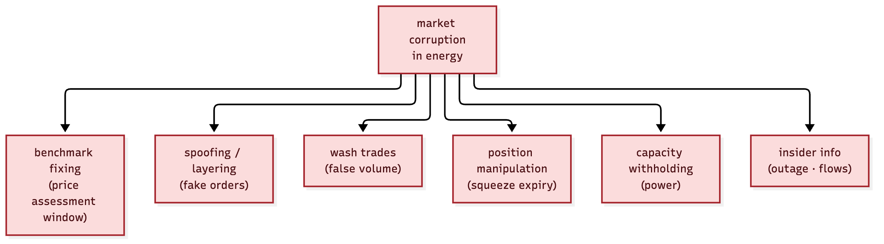
Figure 26.1 — benchmark fixing, spoofing, wash trades, position manipulation, withholding, insider.
| Abuse | What it is | Example pattern |
|---|---|---|
| benchmark fixing | trading in the assessment window to move the published price | trading at the fix to mark a book |
| spoofing / layering | placing orders you intend to cancel to move price | a wall of bids pulled at the last moment |
| wash trades | trading with yourself to fake volume | two accounts crossing the same ticket |
| position manipulation | squeezing a delivery/expiry point | cornering the prompt month |
| capacity withholding | a generator withholds to lift power price | a plant "outage" at peak |
| insider information | trading on non-public outage/flow data | a physical trader acting before an outage is public |
The UK and EU regimes — REMIT (energy market integrity), MAR (market abuse), and the CFTC across the Atlantic — prohibit these, with reporting, position limits and surveillance.
What it is. The gas curve is not uniformly liquid. The front month is tight; the back (seasons, years) is thin; and the spreads and options are thinner still. Liquidity is the difference between a trade you can exit and a trade that owns you.
Why it matters. The 2006 calendar-spread collapse and the 2022 spike were both, at root, liquidity events: when a position is too big for the market, the exit is the move.
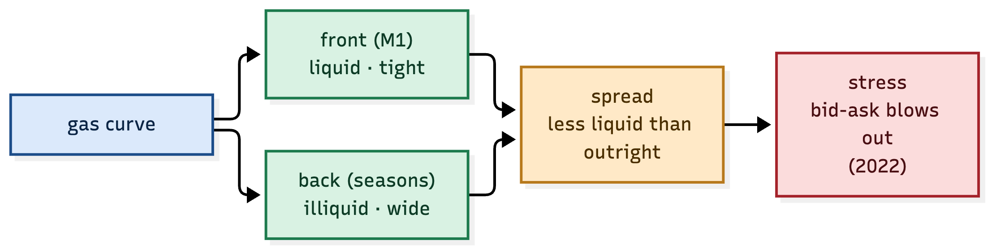
Figure 27.1 — front liquid, back illiquid; the spread is thinner than the outright.
| Instrument | Liquidity | Risk |
|---|---|---|
| front month (M1) | tight, deep | low |
| seasons / years | thin, wide | high |
| calendar spread | thinner than outright | high (the 2006 lesson) |
| options / tail | very thin | very high, especially in stress |
The rule follows: size to the liquidity, not to the conviction. A correct view in an illiquid instrument is still a loss if you cannot get out.
What it does. The platform's own answer to corruption and illiquidity: every order, fill and signal is an envelope; surveillance is a view over the lake, not a separate log.
Why it matters. The same traceability that makes a trade auditable makes a manipulation auditable. A spoof is a pattern of cancelled orders in the record; a wash is two accounts crossing; a squeeze is a position against the limit. All are detectable from the envelopes.
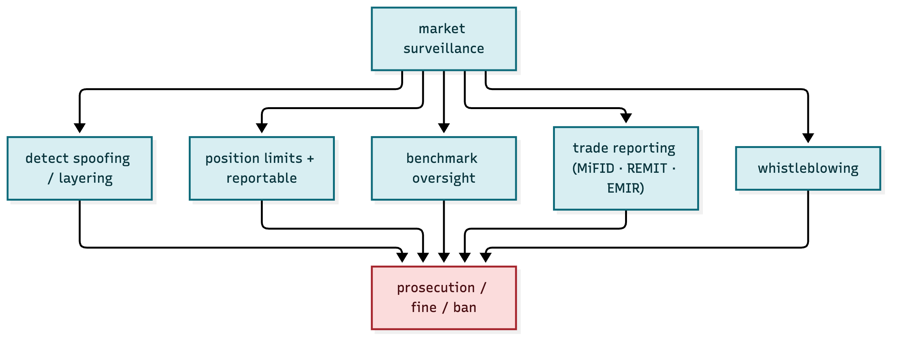
Figure 28.1 — spoof/layering detection, position limits, benchmark oversight, reporting, whistleblowing.
| Control | What it watches |
|---|---|
| spoof / layering detection | order-to-trade ratios, cancel patterns |
| position limits | exposure against the exchange + regulatory caps |
| benchmark oversight | trading around the assessment window |
| reporting | REMIT / MAR / EMIR / MiFID II |
| whistleblowing | a channel for the inside report |
The envelope is the honest broker: it records everything once, in order, with a correlation id — so both the trade and the attempt to game it leave the same kind of trace.
That is the whole game: a physical market, an honest platform, and a disciplined edge.
What it does. ATLAS is the data god: it collects, stores and transforms every piece of market data, and turns it into the envelopes that everything else consumes.
Why it matters. Gas is a data-fusion problem — weather, storage, flows, news, sentiment, price — and a compliance problem. ATLAS is the layer that does both: it collects the raw data, stores it append-only, and transforms it into derived signals, with every step versioned and auditable.
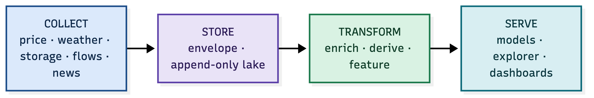
Figure 30.1 — ATLAS is the backbone: data in, stored once, transformed, served to all.
| Stage | What ATLAS does |
|---|---|
| collect | every source publishes an envelope on the bus |
| store | the recorder writes it once into the append-only lake |
| transform | enrich, derive, feature-engineer into derived datasets |
| serve | models, the explorer, the dashboards read the same lake |
This is the answer to "would ATLAS be beneficial?" — yes, because the hard problems in gas are collection, storage and transformation, and ATLAS is already the best answer to all three.
Raw data is not a signal. The transformation pipeline turns raw envelopes into derived features, and it is where most of the value is added.
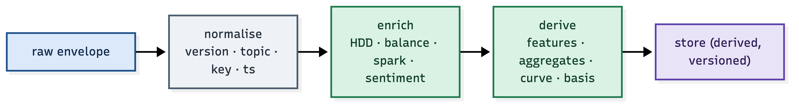
Figure 31.1 — every raw envelope is normalised, enriched and derived, versioned at each step.
| Step | Example |
|---|---|
| normalise | raw temperature → a fundamental.weather envelope with a key + timestamp |
| enrich | temperature → HDD (heating degree days) |
| derive | HDD + storage → a balance forecast; gas + carbon → a spark spread |
| store | the derived dataset is versioned, so a forecast is reproducible |
Because every transformation is itself an envelope, the lineage is preserved: a forecast carries the references to the raw inputs it used, with their ages. That is the ATLAS guarantee — and it is exactly what a gas forecast needs to be auditable.
The gas domain is where ATLAS's "transform" shines, because each raw input becomes a derived signal:
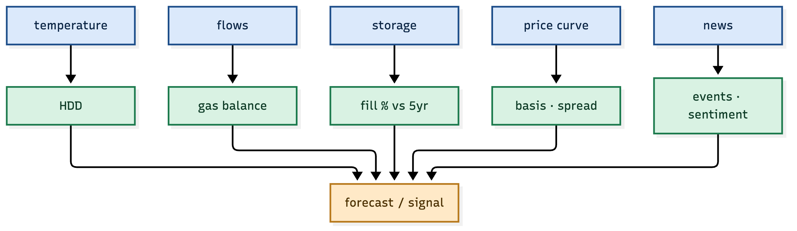
Figure 32.1 — temperature→HDD, flows→balance, storage→fill, price→basis, news→events.
| Raw | Transformation | Derived signal |
|---|---|---|
| temperature | heating degree days | demand pressure |
| pipeline/LNG flows | net balance | supply tightness |
| storage | fill % vs 5yr | winter risk premium |
| price curve | basis, spread | carry / scarcity |
| news | NLP events + sentiment | shock direction |
Each derived signal is a pure transformation published as an envelope — which means it can be reproduced, versioned and audited. That is the difference between a spreadsheet of numbers and a trading system you can trust.
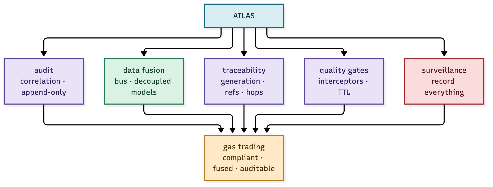
Figure 33.1 — audit, fusion, traceability, quality gates and surveillance, all feeding gas trading.
| ATLAS capability | What it gives gas |
|---|---|
| correlation id + append-only lake | an audit trail from market tick to fill |
| the bus + decoupled models | fusion of weather, storage, news and sentiment |
| generation, refs, hops | full lineage — what a forecast read, and how old |
| interceptors + TTL | data-quality gates — freshness, authority, keying |
| record everything | surveillance — spoofing and wash trades are visible |
The verdict, restated: ATLAS does not give you the gas edge — the weather model, the storage model, the spark spread. It gives you the trust, the traceability and the substrate that let that edge be traded, explained, audited and governed. For a commodity as regulated, event-driven and data-rich as UK gas, that is the foundation — not an add-on.
What this is. A long-term gas curve trader holds positions across months and seasons — calendar spreads, butterflies, the shape of the curve — for days and weeks. Their edge is slow and fundamental, not tick-by-tick. This section argues that ATLAS + the envelope is the platform that edge has always needed.
Why it matters. The incumbent tool (a data terminal) gives you the price; ATLAS gives you the price and the reason and the record. That difference is everything for a portfolio manager who must explain, replay and audit their book.
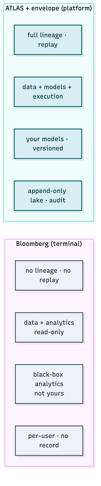
Figure 34.1 — a terminal is read-only; a platform records, versions and replays.
| A terminal | ATLAS + the envelope | |
|---|---|---|
| data | yes, read-only | yes, plus your sources |
| analytics | theirs, black-box | yours, versioned, replayable |
| lineage | none | full refs, per signal |
| audit | none | append-only lake |
| execution | no | yes, on the same bus |
| IP | rented | owned |
A terminal tells you what the price is. ATLAS tells you why your model said what it said, what it read, and what you did about it — and proves all three.
The magic is not the database or the UI. It is the envelope: the tiny, stamped packet that carries its own provenance, lineage, correlation and pipeline. Everything else in this document — the fusion, the audit, the replay, the surveillance — is a consequence of the envelope being the unit of record.
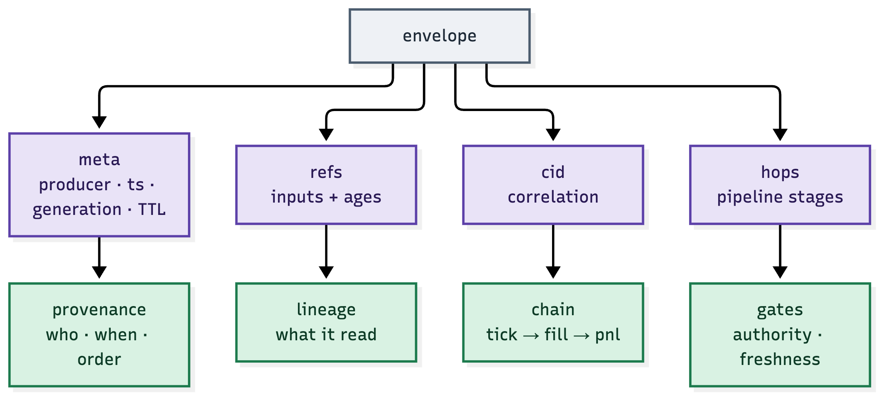
Figure 35.1 — meta, refs, cid, hops: provenance, lineage, chain, gates.
| Feature | What it answers |
|---|---|
meta (producer, ts, generation, TTL) |
who, when, in what order, how fresh |
refs (inputs + ages) |
what this decision read, and how old |
cid (correlation id) |
the whole chain: tick → decision → fill → pnl |
hops (pipeline) |
which gates ran, and what they refused |
The rest of this section is case studies — each one is a feature of the envelope, shown as a concrete example a curve trader or PM would actually hit.
A PM asks why the model went long Q1 on 3 February. The forecast's refs answer it:
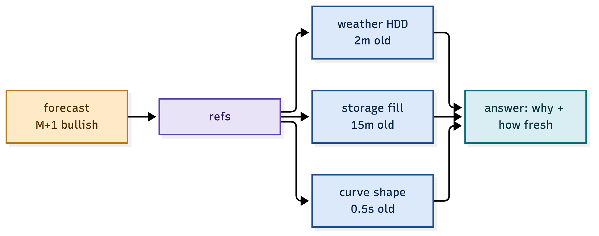
Figure 36.1 — the forecast carries its inputs and their ages.
forecast M+1 bullish
├─ ref: fundamental.weather (HDD +4, 2m old)
├─ ref: fundamental.storage (fill 60%, 15m old)
└─ ref: market.curve (backwardated, 0.5s old)
The answer is not a recollection — it is the record. The PM sees the exact inputs, and their ages, and knows the decision was well-founded (or stale). That is the difference between a model you trust and a model you hope is right.
One correlation id follows the work from the market tick to the P&L:
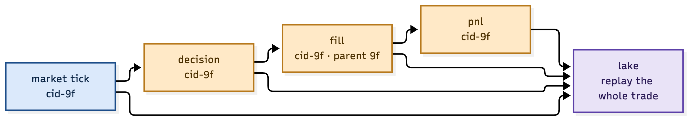
Figure 36.2 — one cid resolves the tick, the decision, the fill and the pnl from the lake.
$ resolve cid-9f
market.tick 09:02:01 (the trigger)
model.decision 09:02:03 long M+1 · cid-9f
model.fill 09:02:05 net +0.4% · parent cid-9f
model.pnl 09:02:05 equity +£1,240 · cid-9f
From one id, the entire life of a trade is reassembled. For a curve trader holding for weeks, that means every position's whole story is recoverable — for the PM, the risk team, and the regulator.
A weather feed stops publishing. Because the envelope carries a monotonic generation per topic, the gap is detected, not inferred:
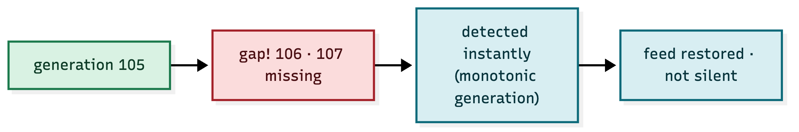
Figure 36.3 — a gap in generation is a fact, caught instantly.
fundamental.weather generation 105
fundamental.weather generation 108 ← 106, 107 missing
A terminal would simply show a stale (or blank) weather number and you would never know. ATLAS flags the gap — the forecast that would have used a silent feed is refused as stale, and the feed is restored. This is the difference between "the data was wrong" and "the data went silent, and we caught it".
The forecast changed overnight. The versioned envelope shows exactly why:
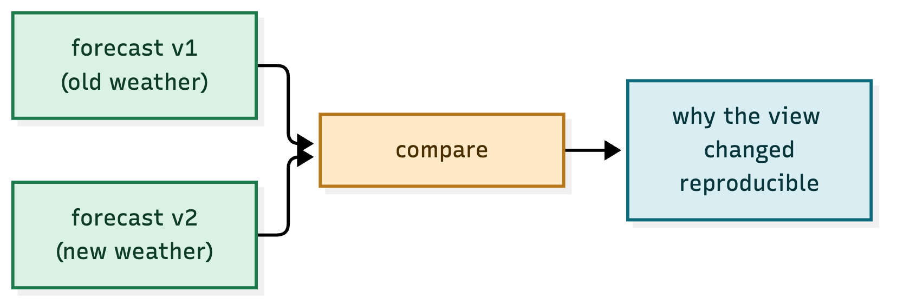
Figure 36.4 — two versions differ by one input, and the difference is reproducible.
forecast v1 (old weather): M+1 bearish
forecast v2 (new weather): M+1 bullish ← the cold revision
Because data and models are versioned, the change in the view is attributable to the change in the input — not to a mystery. A PM can show the trader, the risk team and the client exactly why the book changed.
The envelope's TTL and the freshness interceptor refuse a stale input:
model.decision M+1 long
→ freshness interceptor: REFUSED
reason: storage ref 32h old (max 15m)
A terminal would let you trade on a number you think is live. The envelope refuses to. For a market where a storage print or a weather run is the whole trade, that freshness gate is the difference between an informed position and a stale one.
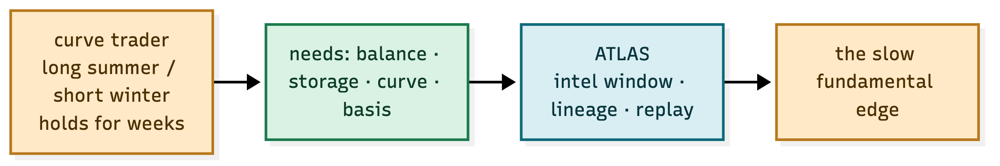
Figure 37.1 — the slow fundamental edge, on a platform that records it.
| The curve trader does | ATLAS provides |
|---|---|
| reads the balance, storage, weather | fused envelopes, with lineage |
| forms a slow view (summer-winter, basis) | the intel window confirms the pattern |
| expresses it via spreads | orders + fills on the bus |
| holds for weeks | every mark, every P&L, recorded |
| explains the P&L to the PM | the correlation chain + the case file |
A long-term curve trader does not need a faster terminal. They need a system that remembers why they are in the trade, proves it, and replays it. That is ATLAS, and that is the envelope.
The envelope does more than record. It remembers, replays and proves. These are the features that make a trader or PM stop and say "oh — that's why it's different."
A curve trader's edge is slow. The book's intel window is the memory that matches it: it accumulates signals over days and only acts when a pattern forms.
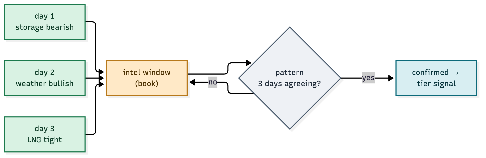
Figure 38.1 — three days of agreeing signals become one confirmed tier signal.
day 1: storage bearish → recorded (1/3)
day 2: weather bullish → recorded (2/3)
day 3: LNG tight → recorded (3/3) → pattern confirmed
A tick-based system would have traded each day's noise. ATLAS waits for the streak — which is exactly the discipline of a long-term curve trader, now machine-enforced.
From raw temperature to the final fill, every step is an envelope, so the whole chain is versioned and replayable.
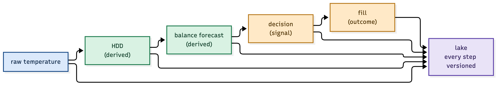
Figure 38.2 — the full chain, each step a versioned envelope in the lake.
raw temperature → HDD → balance forecast → decision → fill
(envelope) (envelope) (envelope) (envelope) (envelope)
The trader can point at any link and ask "what did this read, and was it right?" — and the answer is in the lake, not in someone's memory.
Most systems record only the trades. ATLAS records the non-trades too — every refusal is an envelope naming the rule and the number.
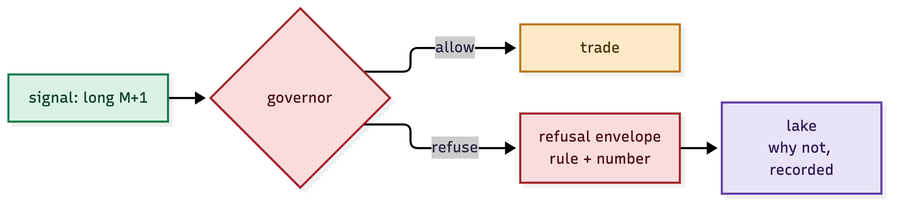
Figure 38.3 — a refused signal is itself an envelope, so "why not" is answerable.
signal: long M+1
→ governor: REFUSED (gross 12.4× > limit 8×)
For a PM reviewing the book, this is gold: the absence of a trade is explained, not a mystery. The discipline is visible — and the discipline is the edge.
The lake is append-only, so any day can be replayed with the exact same data, in the exact same order.
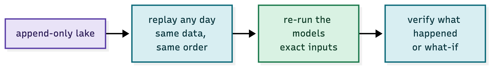
Figure 38.4 — replay the day, re-run the models, verify what happened.
A trader can ask "what did my model actually see at 09:02 on 3 February?" — and see it. And "what would it have done with the corrected weather?" — and re-run it. That is a capability no terminal has: a time machine for your own decisions.
Two models can be run on the same versioned inputs and compared fairly — same data, same clock, different models.
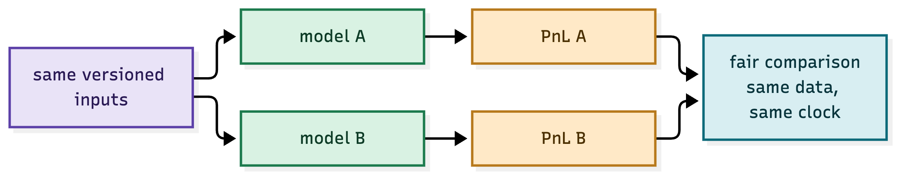
Figure 38.5 — same inputs, two models, one fair P&L comparison.
Without the envelope, comparing models is confounded — they saw different data at different times. With it, the comparison is clean, and the better model wins on merit.
A regulatory report is a query over the lake, not a separately-maintained spreadsheet.
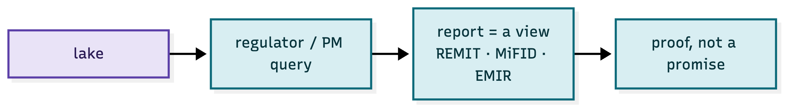
Figure 38.6 — REMIT, MiFID, EMIR reports are generated from the same evidence.
The regulator's question ("show me every order, its reasoning and its fill") is answered by a view, with correlation ids and ages. The report is proof, because it is generated from the append-only record — not reconstructed after the fact.
The deepest fact: an envelope knows its own provenance, its own lineage and its own chain. The lake is therefore self-documenting.
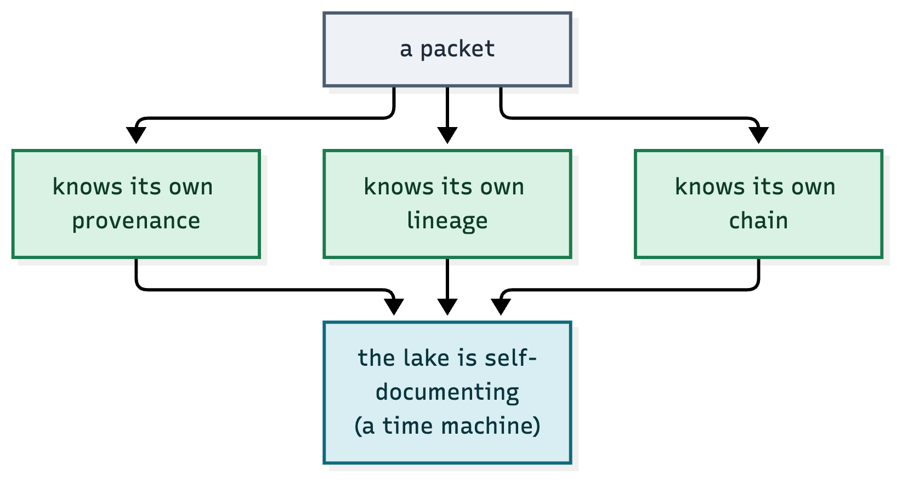
Figure 38.7 — a packet knows who made it, what it read, and what followed it.
That is why the envelope is the whole trick: you don't maintain documentation — the packets are the documentation. The system is its own audit trail, its own research log, and its own time machine.
What it is. The envelope is a universal adapter: any data source — a CSV export, a REST API, a WebSocket, a FIX feed, a weather API, a news wire — can be wrapped into one shape and flow through the same bus into the same lake.
Why it matters. Integration is usually the most expensive, most fragile part of any trading system: every new source needs its own connector, its own schema, its own storage. The envelope removes that — one shape to rule them all, and every source is just a thin adapter that maps its native format into an envelope.
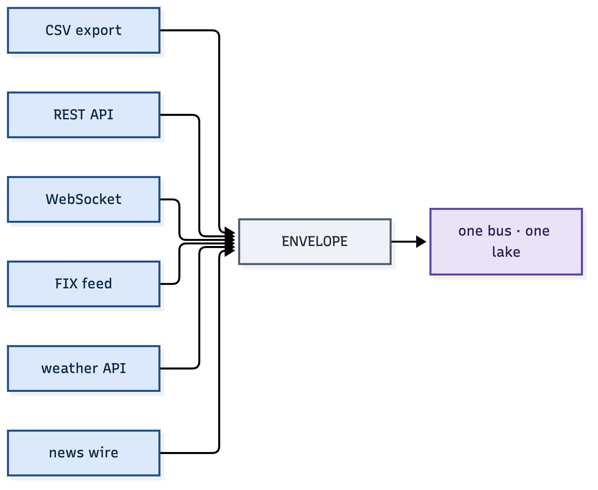
Figure 39.1 — CSV, REST, WebSocket, FIX, weather, news — all become envelopes on one bus.
The value is the normalisation: once a thing is an envelope, it is versioned, keyed, timestamped, correlated and auditable — regardless of where it came from. The lake does not care if a packet is a Bloomberg export or a satellite reading; it treats them the same.
The plug-in point is a three-stage pipeline. This is the mechanism that makes ATLAS universal:
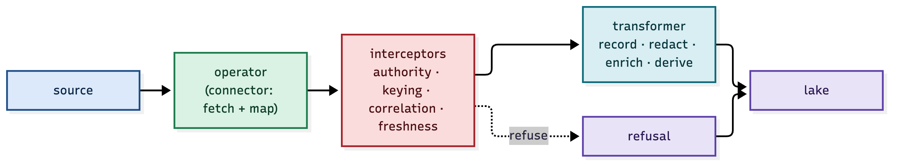
Figure 40.1 — operator (connect) → interceptors (gate) → transformer (shape) → lake.
| Stage | What it does | The "plug" |
|---|---|---|
| operator | fetches from the source and maps to an envelope | the connector — write one per source |
| interceptors | authority, keying, correlation, freshness | the trust gates — who may write, is it fresh |
| transformer | record, redact, enrich, derive | the adaptation — reshape, hide, enrich |
To slot in a new system, you write an operator (the adapter), register its topic, and attach the interceptors and transformers that apply. Everything downstream — models, books, the explorer — consumes it unchanged, because it is already an envelope.
What it does. A connector is a thin operator: fetch from a third-party API (poll or stream), map the response into an envelope, publish. That is the whole integration.
Figure 41.1 — weather, storage, flows, price, news, CRM — each a thin connector on the bus.
| Source | API | What it contributes |
|---|---|---|
| ECMWF / GFS | weather | HDD, wind, solar forecast |
| GIE AGSI | storage | gas fill levels |
| ENTSO-E | flows / generation | cross-border, generation mix |
| ICE / EEX | market data | price, curve, settlement |
| news wire | news / NLP | events, sentiment |
| CRM / KYC | internal | client, compliance |
Because the envelope is shape-agnostic, the connector is ~50 lines: authenticate, fetch, map to envelope, publish. No new database, no new schema, no new UI — the models and the explorer pick it up automatically.
Why it is so slick: the hard parts — storage, versioning, lineage, audit, fan-out — are already done by the bus and the lake. The only new work is the fetch and the map.
What it is. Because everything plugs in, ATLAS accumulates a wealth of data — not just price, but weather, storage, flows, news, sentiment, fundamentals, shipping, satellite, power, carbon, FX — all in one lake, all cross-correlatable.
Why it matters. The edge in gas is rarely in one source. It is in the intersection: a cold forecast plus a low storage print plus a pipeline outage plus a news headline. ATLAS is the only architecture that fuses all of them with lineage, so the fusion is trusted.
Figure 42.1 — everything into one lake, fused into the edge no single source gives.
The "wealth" is not volume for its own sake — it is combinatorial value: N sources that can be cross-correlated produce far more signal than N sources in isolation. And because every source is a versioned envelope, the correlations are reproducible, not anecdotal.
The slick part. One shape, one bus, one pipeline: any source plugs in with a thin adapter, and everything downstream (models, books, the explorer, compliance) consumes it automatically.
The dangerous part. When everything is in one lake and one bus, the system can act on all of it — automatically, at scale, in milliseconds. That power is dangerous three ways:
Figure 43.1 — the power is real; the guardrails make it safe.
| Danger | What it means | The guardrail |
|---|---|---|
| bad data at scale | a wrong feed auto-traded everywhere | interceptors (freshness, authority) refuse it |
| leakage | one consumer sees data it shouldn't | transformers (redaction) + authority |
| autonomy | the machine acts without a human | human-in-the-loop + the governor |
Why it is dangerously powerful: the same universality that makes it slick also makes it a force multiplier — for good data and for bad. A silent feed, a mis-configured connector, or an over-permissioned consumer would be amplified by the very power that makes the system great. That is exactly why the interceptors, transformers and the human-in-the-loop are not afterthoughts — they are the guardrails that make the power safe to wield.
Figure 44.1 — operator, topic, interceptors, transform — done.
1. write an operator (fetch the API, map to an envelope)
2. register the topic (who may write, retention)
3. add the interceptors (authority, keying, correlation, freshness)
4. transform + store (record, redact, enrich)
→ done — everything downstream consumes it automatically
That is the whole answer to "how does ATLAS slot into any system": four steps, one shape, and the rest of the platform already knows what to do with it.